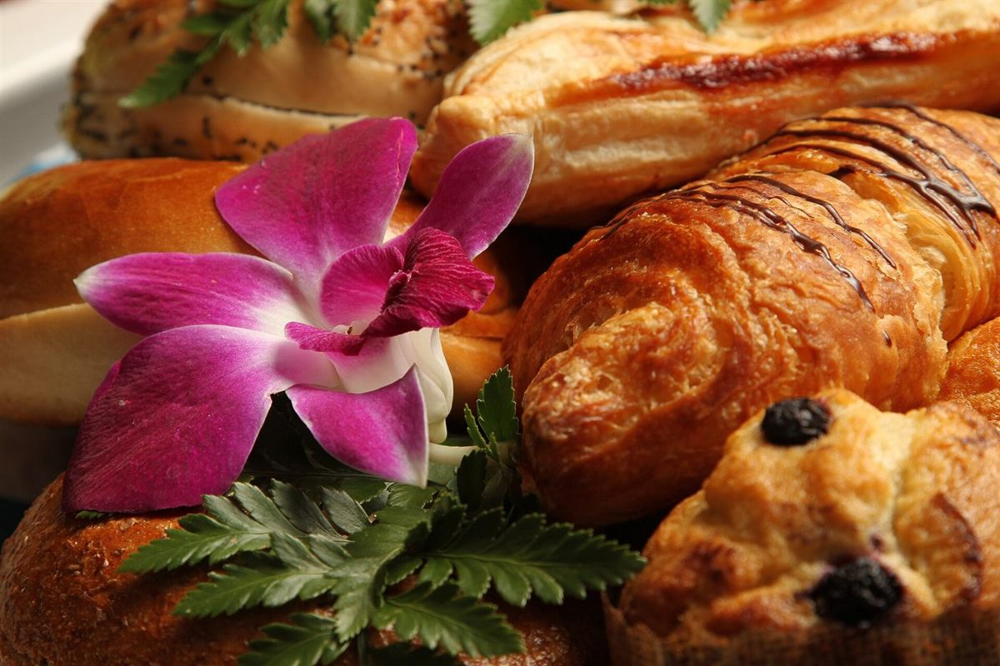

名前のこと
名前のこと
お店について確認できているのは、所在地・電話番号・Instagramのアカウントです。
確認できていること
- 店名は「Museau」、業種はベーカリー
- 所在地は長野県松本市大手2丁目2−10(〒390-0874)
- 電話番号は0263-88-0333
- Instagramは @museau_japon
- 営業時間・定休日・メニュー・価格・ご予約・駐車場は準備中

想像してみる
鼻先でたどる、という見立て
これは制作側が名前の響きから考えた見立てで、お店の実際の姿ではありません。パンを選ぶときに、まず鼻が先に決める。そんな場面を、制作側は想像しました。


言葉のこと
Museauの読みについて
このページでは「ミュゾー」と表記していますが、お店が実際にどう読ませているかは確認できていません。正しい読み方はお店にご確認のうえ差し替えます。